Table of Contents
Preface
- Preface to Cinderella.2.6
- Preface to Cinderella.2.0
- Preface to Cinderella 1.2
- How to Read This Manual
Introduction
Theoretical Background
A Quick Start
Reference Guide
- Dynamic Geometry (using Cinderella for pure geometry)
- The Main Menu
- Toolbars
- General Operations (loading, saving, selecting, etc.)
- Operations for Elementary geometry
- Move Mode
- Interactive Modes

Add a Point 
Add a Line 
Line through a Point 
Add a Parallel 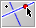
Add a Perpendicular 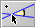
Add a Line with a Fixed Angle 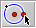
Add a Circle 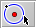
Circle by Radius 
Circle by Fixed Radius 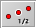
Midpoint 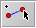
Segment
- Definition Modes
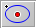
Center 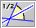
Angle Bisector Compass 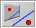
Mirror 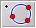
Circle by Three Points 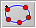
Conic by Five Points Ellipse by Foci 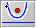
Parabola by Focus and Directrix 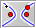
Hyperbola by Foci 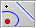
Polar of a Point 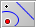
Polar of a Line 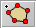
Polygon 
Intersection 
Arc 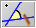
Angle Mark
- Measurements
- Special Modes
- Conic Operations
- Polygons
- Views and geometries
- Transformations and bases
- Transformation groups and IFS
- Inspector (How to manage the properties of objects?)
- CindyLab (simulation of experiments in physics)
- Simulating masses and forces
- Reference
- The Elements of CindyLab
- The objects

Free Mass 
Velocity 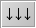
Gravity 
Sun 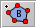
Magnetic Field 
Rubber Band 
Spring 
Coulomb Force 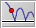
Floor 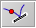
Bouncer
- Environment
- Many-Particle Systems
- Animations and CindyLab
- Geometry and CindyLab
- Scripting Physical Environments
- CindyScript (programming Cinderella)
- Reference
- CindyScript fundamentals
- General Concepts
- Entering Program Code
- Variables and Functions
- Accessing Geometric Elements
- Control Operators (if, repeat, while, …)
- Arithmetic Operators (+, -, *, /, sin(), cos(), …)
- Boolean Operators
- String Operators
- Lists and Linear Algebra (the general concepts)
- Drawing (draw(), plot(), …)
- Geometric Operators (join, meet, …)
- Calculus (derivatives and tangents, …)
- Syntherella (audio output)
- Special Operators
- The Editor
- Tiny Code Examples
- CindyScript fundamentals
- Reference
- Copy, Paste, and Macros (Cinderellas macro concept)
- HTML Export (generating interactive html pages)
- Scribbling (using Cinderella with a pen-driven input device)
- Extensions (further ways to enhance Cinderella)
- Software License
- Operator Index (by subject)


Page last modified on Thursday 01 of September, 2011 [13:46:08 UTC].
The original document is available at
http://doc.cinderella.de/tiki-index.php?page=Table%20of%20Contents